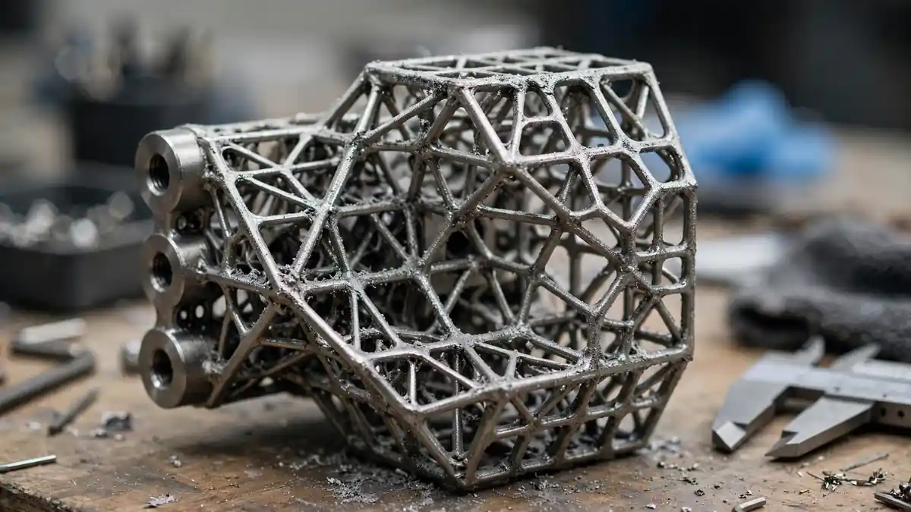
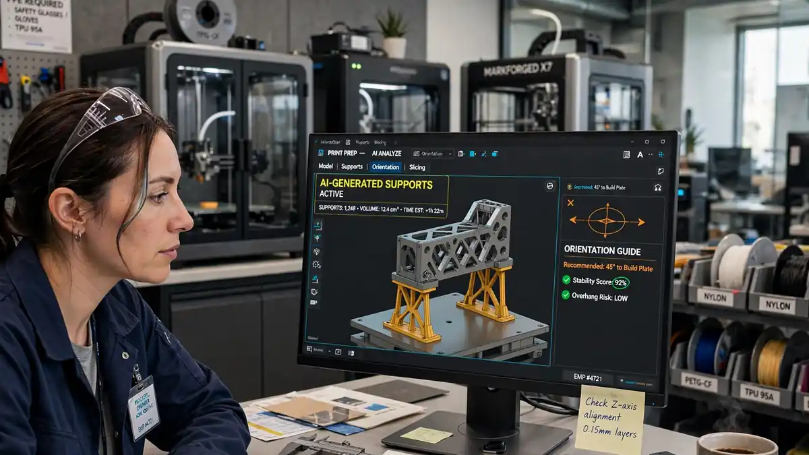

UnionTech's Quick AI turns 3D-printing tribal knowledge into Process Agents: initial plans in minutes, not days
Shanghai's UnionTech detailed its Quick AI enterprise agent OS today: bespoke "Process Agents" compress initial 3D-print process planning from hours or days to minutes, mining a repository of nearly 5 million archived part models.
Shanghai's UnionTech detailed its Quick AI enterprise agent OS today: bespoke "Process Agents" compress initial 3D-print process planning from hours or days to minutes, mining a repository of nearly 5 million archived part models.
When a 3D model of a complex part lands on a process engineer's desk, the print job doesn't start right away. Is the material suitable? How should the part be oriented? Where are the supports needed, and which areas are prone to deformation? At Shanghai's UnionTech, answering those questions used to take anywhere from several hours to multiple days of senior-engineer judgment and iterative trial-and-error. Today, for projects backed by historical precedent, engineers can get an initial process plan in minutes — generated by bespoke "Process Agents" running on the company's proprietary Quick AI enterprise agent OS, per a PR Newswire release dated October 10.
Tribal knowledge, institutionalized
UnionTech's framing is that the real intellectual property isn't the final recipe — it's the decision path. The same material can demand entirely different processing strategies depending on wall thickness, geometry, and end-use application, and why a particular support strategy failed is usually understood only by the engineers who were in the room. Process Agents built on Quick AI continuously log process workflows, experimental results, and empirical parameters, so every detail becomes reference data for the next project. As Allen Yang, vice general manager and head of the digital center and AI at UnionTech, put it: "Why the part was oriented a certain way, why parameters were tweaked, which methods were attempted and failed — this is the real intellectual property worth preserving."
One important caveat, straight from the release: "a few minutes" refers to generating the initial proposal, not a completed process. Complex components still need engineering reviews and physical trials — the change is that teams get a data-backed starting point on day one instead of re-evaluating from scratch.

An end-to-end data backbone
Process Agents are the entry point; the harder problem, UnionTech says, is bridging siloed business systems. Customer requirements buried in emails, quotation benchmarks in separate business systems, production schedules on the shop floor — Quick AI acts as the orchestrator that maps it all to the specific order, part, and design revision. It sits on top of a decade of digital investment: Unionfab Cloud for customer engagement, RFQs, quoting, order management, and supply chain; Unionfab ONE for 3D model preparation, process configuration, and machine control; and an Auto Product Suite for specialized algorithms.
The fuel is a repository of nearly 5 million industrial part models with their corresponding process parameter datasets, which Yang says Quick AI is designed to make "intuitive and actionable for front-line teams." Automated quotation is already deployed for standardized requirements, pairing geometry, materials, process rules, and cost algorithms — while complex projects and high-stakes pricing commitments still route to manual engineering review and human sign-off.

A live proving ground
UnionTech has a real-world benchmark most enterprise AI projects lack: the Unionfab on-demand manufacturing platform, where live orders flow from RFQ through quoting, production, QA, and global logistics — fulfilled partly by UnionTech's own industrial printer fleet and partly across a partner network of hundreds of service providers. That pipeline surfaces concrete friction points (declined quotes, repeated manual revisions, quality tolerance mismatches) that the company uses to decide whether an AI feature is actually delivering value. In targeted programs like tire mold manufacturing, it has already deployed integrated equipment-plus-materials-plus-software solutions that serve as empirical benchmarks for the agents.
Why it matters
Industrial AI announcements usually lean on model capability; UnionTech is leaning on operational outcomes — faster customer turnaround, more engineering capacity per team, consistent quality, reliable delivery. It's a pragmatic bet on what Yang describes as closed-loop manufacturing intelligence: every finished project should make the next one better, faster, and smarter, with senior engineers' intuition steadily converted into organizational capability.
Grain of salt: this is company content, distributed as a press release, so the "minutes not days" figure and the 5-million-part repository are UnionTech's claims, not independently audited. The tell will be whether quoting turnaround times and engineering capacity actually move — the company says it measures exactly that. Either way, the playbook is notable: don't pitch the AI, pitch the loop that makes the AI earn its keep. Also syndicated by Morningstar.